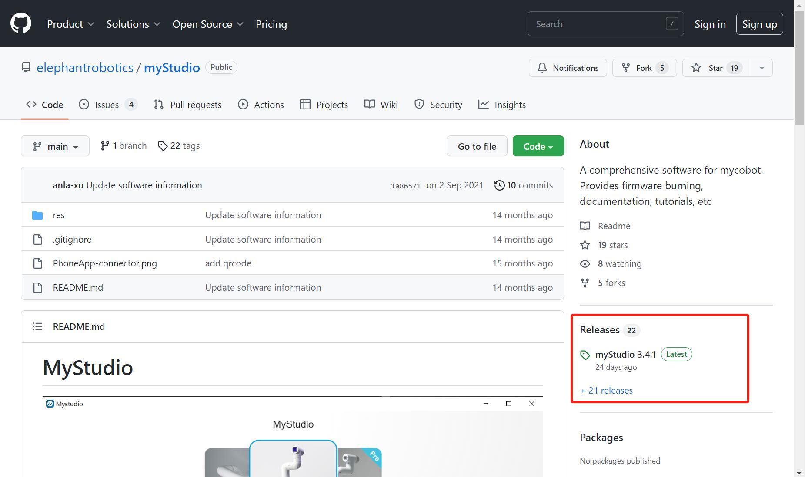

1. myStudio

1.1. Original intention of myStudio design
myStudio is a one-stop platform for using robots such as myRobot/myCobot.
It is convenient for users to select different firmware and download them according to their own usage scenarios, and at the same time learn related teaching materials and browse tutorial videos online.
1.2. myStudio latest version and supported platforms
Latest version: V3.5.8
Applicable to: Windows, Mac, Linux
1.3. myStudio features
- Burn and update firmware
- Provide robot tutorials, such as user manuals, video tutorials, Q&A, etc.
- Information on maintenance and repairs
1.4. myStudio applicable devices
- myCobot 280
- myCobot 280 M5
- myCobot 280 PI
- myCobot 280 Jetson Nano
- myCobot 280 for Arduino
- myCobot 320
- myCobot 320 M5
- myCobot 320 PI
- myPalletizer 260
- myPalletizer 260 M5
- myPalletizer 260 PI
- mechArm 270
- mechArm 270 M5
- mechArm 270 Pi
- myCobot Pro 600
- myBuddy 280
1.5. Firmware version recommendation
Different models of robotic arms require different firmware to be burned. The following are the firmware versions recommended for burning different models of robotic arms.
myCobot 280 series
The myCobot 280 series has 4 versions: M5 version, PI version, ardunio version and jetsonnano version. Different versions have different core models, and the firmware and versions required to be burned are also different.
| Robot version number | Core | Required firmware to be burned | Recommended firmware and version |
| M5 version | M5Stack-Basic | miniRobot firmware | Recommended to burn v2.1 version, you can use drag teaching, wifi, Bluetooth and other functions |
| Atom | atomMain firmware | For products with serial numbers ER28001202200415 and earlier, or products without serial numbers, it is recommended to burn v4.1; for products with serial numbers ER28001202200416 and later, it is recommended to burn v5.1 | |
| PI version | RaspberryPI 4B | ubuntu firmware | Recommend burning V18.04. version |
| Atom | atomMain firmware | For products with serial numbers ER28001202200415 and earlier, or products without serial numbers, it is recommended to burn v4.1; for products with serial numbers ER28001202200416 and later, it is recommended to burn v5.1 | |
| Arduino version | mega2560 | transponder firmware | Recommend burning v1.0 version | mkrwifi1010 | transponder firmware | Recommend burning v1.0 version |
| Atom | atomMain firmware | For products with serial numbers of ER28001202200415 and earlier, or products without serial numbers, it is recommended to burn v4.1; for products with serial numbers of ER28001202200416 and later, it is recommended to burn v5.1 | |
| Jetson nano version | JestonNano | ubuntu firmware | Recommend burning V18.04. version |
| Atom | atomMain firmware | For products with serial numbers of ER28001202200415 and earlier, or products without serial numbers, it is recommended to burn v4.1; for products with serial numbers of ER28001202200416 and later, it is recommended to burn v5.1 |
2. myStudio environment setup
2.1. myStudio download and installation
Note: The installation path of myStudio cannot have any spaces
Download address:
- After entering the download address, click
myStudioon the right and select the corresponding version to download.


- Different suffixes represent different systems, please download the corresponding version:
- *.tra.xz —— Linux system
- *.dmg —— Mac system
- *.exe —— Window system
You can download it according to your computer system.

Note: Please download the latest version. You can view the current version in the downloaded myStudio interface and update to the latest version.

2.2. Driver Installation
Users can click the button below to download the corresponding CP210X or CP34X driver package according to their operating system. After decompressing the package, select the installation package corresponding to the operating system bit number for installation.
There are currently two driver chip versions, CP210X (for CP2104 version) and CP34X (for CH9102 version) driver package. If you are not sure which USB chip your device uses, you can install both drivers at the same time. ( During the installation process, an error may appear for CH9102_VCP_SER_MacOS, but the installation has actually been completed, so just ignore it.)
For Mac OS, before installing, make sure that the system "Preferences->Security and Privacy->General" is set and that it allows downloads from the App Store and approved developers.
Download the bottom M5Stack-basic serial port driver
CP210X
- Windows10
- MacOS
CP34X
Download the terminal Atom serial port driver
- Windows10

2.3. How to distinguish CP210X and CP34X chips
- As shown in the figure below, open Device Manager and check Ports (COM and LPT)
- If Port (COM and LPT) shows USB-Enhanced-SERIAL CH9102, it is CP34X chip

- If Port (COM and LPT) shows Silicon Labs CP210x USB to UART Bridge, it is CP210X chip

3. Burn and update firmware
3.1. Burn M5Stack-Basic firmware
Note: Pi series robot arms do not need to burn M5Stack-Basic firmware.
Step 1: Connect to PC. The connection method between M5Stack-Basic and PC is shown in the figure below:

Step 2: Select the port. After connecting, the USB port in the connection window of myStudio will show the connected development board (here is the myPalletizer 260M5 version as an example):

Step 3: Click Login->M5Stack-basic to burn the required firmware:
Note: The 280 PI/Jetson nano/Arduino version does not have M5Stack-basic, so it will display "No data" after connecting to myStudio.

3.2. Burn Atom firmware
Step 1: Connect to PC. Connect the Atom at the end with USB.

Step 2: Select ATOM in the Board column, and the Atom firmware will appear in the Basic sidebar. There is only one Atom firmware, click to burn it (the following figure takes myCobot 280 as an example).